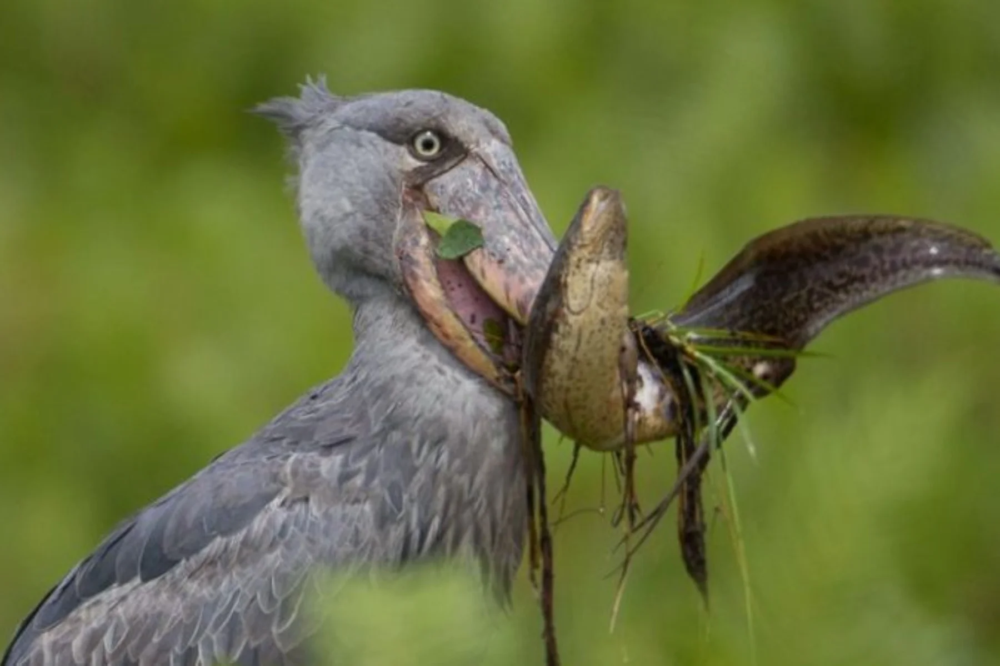

One extraordinary bird can become the start of a much bigger Uganda journey filled with wetlands, wildlife, and easy-access adventure.
By Explore Uganda Wildlife Desk·

The shoebill has the kind of presence that makes people stop talking. It looks ancient, almost unreal, and manages to feel both motionless and intense at the same time. For many travelers, seeing one in the wild becomes more than a birding moment. It becomes the sighting they describe first when they return home.
Uganda is one of the best places in Africa to search for the shoebill, and that matters not only to dedicated birders. Even travelers who would not normally build a trip around a bird often find themselves completely won over by the experience. The setting helps: quiet wetlands, narrow channels, papyrus edges, morning light, and the growing suspense of knowing the next bend may reveal one of the continent's most iconic species.
What makes this especially attractive for tourism is that shoebill tracking fits beautifully into a broader Uganda itinerary. You can pair it with Entebbe, Kampala, Lake Victoria, a safari, chimpanzees, gorilla trekking, or a relaxed cultural stop. In other words, the shoebill is not only a reason to visit Uganda. It can be the perfect beginning to a much richer trip.
Why The Shoebill Draws Travelers To Uganda
Some wildlife sightings are exciting because they are dramatic. The shoebill is exciting because it feels improbable. Its large bill, deliberate stare, and prehistoric silhouette make it unlike anything most visitors have ever seen. Even before you find one, the anticipation creates a sense of occasion.
That emotional pull is powerful for tourism. People love wildlife moments that feel distinctive and easy to remember, and the shoebill delivers exactly that. It is also highly shareable, which matters in practical travel terms. One strong sighting can spark curiosity among friends, families, and future travelers who had never previously considered Uganda.
For Uganda, the shoebill adds another layer to the country's appeal. It broadens the story beyond gorillas and classic safaris and shows visitors that Uganda rewards attention in many different habitats.
Mabamba Swamp Is The Best-Known Place To Look
If travelers ask where to see the shoebill in Uganda, Mabamba Swamp is usually the first answer for good reason. Located within reach of Entebbe and Kampala, it offers one of the country's most accessible and best-known shoebill tracking experiences. That convenience makes it ideal for first-time visitors, short-stay travelers, and anyone wanting a rewarding outing close to an arrival or departure point.
The experience usually involves moving quietly through wetland channels by canoe or small boat with a local guide who understands the habitat and recent bird movements. The search itself is part of the attraction. You are not simply being transported to a static viewpoint. You are entering a living wetland landscape that feels calm, atmospheric, and genuinely wild.
Even when the shoebill is the headline, Mabamba often gives travelers much more than one species. The wider birdlife, the changing light, and the sense of being so close to a major gateway yet surrounded by nature make the excursion feel surprisingly rich.
When To Go And What To Expect
Early mornings are often the most rewarding time for shoebill tracking because the wetland is quieter, cooler, and better suited to patient observation. Visitors should come with realistic expectations and the right mindset. Wildlife is never guaranteed, and that uncertainty is part of what makes the eventual sighting feel earned.
It helps to bring binoculars, a camera with some reach if possible, sun protection, and a willingness to move slowly. The most memorable wildlife experiences often happen when travelers stop rushing and start noticing. Shoebill tracking in Uganda is exactly that kind of experience.
For tourism planning, this is also a very flexible activity. It can work as a half-day or full-day outing, and it combines well with nearby urban, cultural, or lakeside experiences.
How To Turn A Shoebill Sighting Into A Bigger Uganda Itinerary
One of Uganda's advantages is how naturally different experiences connect. A traveler may start with shoebill tracking near Entebbe, continue into Kampala for city energy and culture, then head onward for a classic safari in Murchison Falls or Queen Elizabeth National Park. Others may pair wetlands with primates, adding Kibale or Bwindi for chimpanzees or gorillas.
This matters because it makes Uganda highly efficient for visitors. You do not need to choose between one iconic moment and a complete holiday. The country allows you to build both. That is one reason Uganda often feels more varied than travelers expect before they arrive.
From a destination-marketing point of view, the shoebill is a brilliant gateway experience. It gives people a specific reason to book while quietly leading them toward a fuller understanding of what the country offers.
Why The Shoebill Experience Leaves A Lasting Impression
Travelers remember the shoebill because it combines rarity, atmosphere, and story. The sighting feels cinematic, but it also feels personal. You are not simply ticking off a species from a list. You are entering a landscape, waiting with intent, and suddenly meeting something that seems to belong to another age.
That emotional quality is exactly what helps attract more tourism to Uganda. Visitors who have strong, specific memories are far more likely to recommend the country, share their experience online, and return for a deeper trip later.
If you are looking for a Uganda experience that is visually distinctive, easy to build into a wider itinerary, and genuinely exciting from start to finish, the shoebill belongs very high on your list.
Keep Exploring
Related Uganda Guides
Pair shoebill tracking with a broader Uganda journey that adds wetlands, wildlife, and planning confidence.